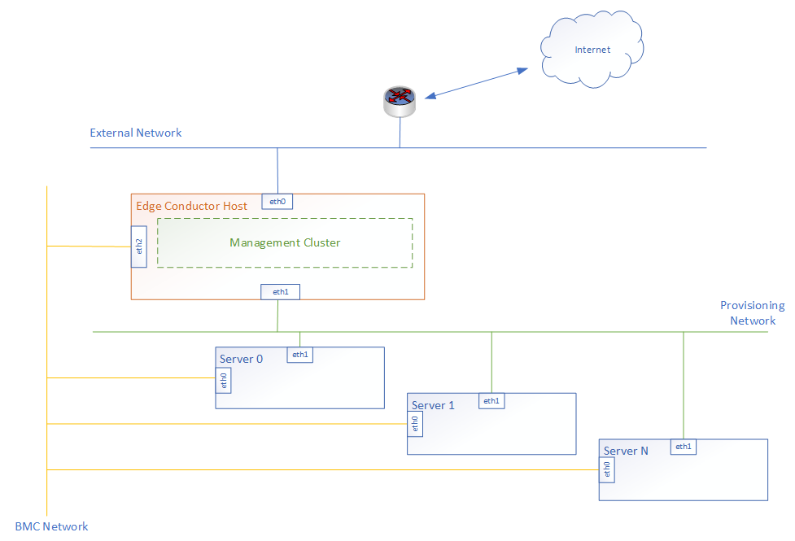

Edge Conductor Tool: How to Deploy a Cluster with ClusterAPI
This document is about how to config and run Edge Conductor tool to deploy a cluster with ClusterAPI.
Preparation
Follow HW Requirements for Edge Conductor Day-0 Host and OS and System Requirements for Edge Conductor Day-0 Host to prepare the Day-0 host hardware and software.
Follow Build and Install Edge Conductor Tool to build and install Edge Conductor tool. Enter _workspace folder to run Edge Conductor tool.
Follow Hardware Configuration and Network Setup to prepare the hardware and network connection of the bare matal machines on which the workload cluster is going to be deployed.
Hardware Configuration
Prepare bare metal servers with BMC (Baseboard Management Controller) support on which a workload cluster is going to be deployed. It is a hard requirement for current stage. Make necessary configurations to enable BMC on these bare metal servers, like IP address, username, password, etc.
Set correct time zone and system time in BIOS to avoid time mismatch between the Edge Conductor Day-0 machine and these bare metal servers.
Network Setup
The servers must be connected to two networks: the BMC network and the provisioning network. The bare metal servers should be able to access the Internet through the provisioning network. The Edge Conductor Day-0 machine must be able to access both the BMC network and the provisioning network also.
Below figure demonstrates the topology for the Edge Conductor Day-0 machine and bare metal servers. The management cluster is deployed on the Edge Conductor Day-0 machine. It can be deployed elsewhere as long as the Edge Conductor Day-0 machine can access it.

Make necessary configurations on the Edge Conductor Day-0 machine to forward traffic from the workload cluster to the external network. That means the Edge Conductor Day-0 machine will act as the gateway for the workload cluster. Below is an example of using iptables to configure the Edge Conductor Day-0 machine as the gateway. Such setting will not be presisted after reboot, please configure again.
# assume the IP addresses used by the workload cluster is 172.22.0.0/24, which is the Provision Network illustrated in above image.
# enable ip forwarding for ipv4
sudo sysctl -w net.ipv4.ip_forward=1
# add an iptables rule for SNAT
sudo ip addr add 172.22.0.1/24 dev eth1
sudo iptables -t nat -A POSTROUTING -s 172.22.0.0/24 ! -d 172.22.0.0/24 -j MASQUERADE
sudo iptables -t filter -A FORWARD -s 172.22.0.0/24 -j ACCEPT
sudo iptables -t filter -A FORWARD -d 172.22.0.0/24 -j ACCEPT
Edge Conductor Kit for CAPI
Edge Conductor Kit for CAPI provide two examples, according to the infrastructure provider planning to be used, are under:
kit/
└── capi_metal3.yml
└── capi_byoh.yml
For more details of the Edge Conductor Kit, check the Example of CAPI Kit_Metal3.yml or Example of CAPI Kit_byoh_and_ESP.yml
In this Edge Conductor Kit for CAPI, a kind cluster will be launched automatically as the management cluster of Cluster API. The kubeconfig file of management cluster located in <edge conductor folder>/_workspace/runtime/m_kubeconf. The workload cluster will be deployed as one control plane node plus one worker node cluster.
Custom Config
Modify the Edge Conductor Kit config file(kit/capi_metal3.yml) following Edge Conductor Configurations | Edge Conductor Kit Introduction, which is a mandatory parameter for “conductor init”.
For more custom config, see Advanced Configuaration
Init Edge Conductor Environment
Run the following commands to initialize the Edge Conductor environment.
./conductor init -c kit/capi_metal3.yml
or
./conductor init -c kit/capi_byoh.yml
Build and Deploy ClusterAPI Cluster
Preparation (Optional)
Depending on the infrastructure provider plan to be used, some additional prerequisites should be satisfied before getting started.
Metal3
Metal3 enables user to deploy workload cluster on bare matal infrastructure. So OS image for servers was required to prepare well before cluster build and deploy.
Note: Get UBUNTU 20.04 image from official source and build out UBUNTU_20.04_NODE_IMAGE_K8S.qcow2 image based on it. For more details, refer to ClusterAPI official website.
qemu-img convert -O raw UBUNTU_20.04_NODE_IMAGE_K8S.qcow2 UBUNTU_20.04_NODE_IMAGE_K8S-raw.img
cp UBUNTU_20.04_NODE_IMAGE_K8S-raw.img <edge conductor folder>/_workspace/
Run the following commands to build and deploy ClusterAPI cluster.
./conductor cluster build
./conductor cluster deploy
Check the ClusterAPI Cluster
Install the kubectl tool (v1.20.0) to interact with the target cluster.
kubectl get nodes --kubeconfig kubeconfig
Service deployment
./conductor service build
./conductor service deploy
Use
--kubeconfigto specify the kubeconfig if you don’t want to use the default config file from~/.kube/config.
To deploy service rook-ceph and rook-ceph-cluster, please ensure these is at least one additional disk with more than 1GB capacity left for ceph osd deployment on any one worker node.
Advanced Configuaration
Config CRI of workload cluster
Containerd is the default CRI used by the workload cluster in Edge Conductor Kit for CAPI. There is also an alternative container runtime CRI-O supported. To enable CRI-O as the container runtime of workload cluster, it requires modifying manifest configuration file <edge conductor folder>/_workspace/config/manifests/cluster_provider_manifest.yml as follows before cluster build.
clusterapi:
runtime: "crio"
Copyright (C) 2021 Intel Corporation
SPDX-License-Identifier: Apache-2.0